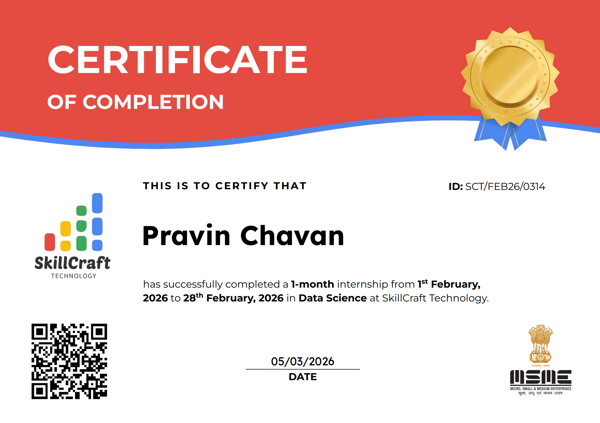

About Me

►Hi there! I'm Pravin Chavan, a final-year Computer Science student and aspiring Data Scientist
who loves turning raw data into models, insights and working products.
►I build end-to-end machine learning projects, from data cleaning and feature engineering to model
comparison with cross-validation, hyperparameter tuning and deployment as live Streamlit apps. My
Gurgaon real-estate price predictor uses a tuned XGBoost model that explains about 90.6% of price
variation (CV R² 0.906) with an average error of only ₹10.8 lakh, and my YouTube comment sentiment
analyzer applies NLP to over 1 million comments to classify audience opinion in real time.
►I'm currently pursuing B.E. in Computer Science at Savitribai Phule Pune University (CGPA
8.69/10, graduating 2027), and I completed a Data Science internship at SkillCraft Technology.
►Alongside ML, I have a solid analytics foundation in SQL, Power BI and Excel, with projects like
customer behavior analysis, sales analysis and business dashboards that show how data supports
business decisions.
►I'm looking for Data Science / ML roles and internships where I can solve real problems with data
and keep growing as an engineer.
➽ 𝐊𝐄𝐘 𝐒𝐊𝐈𝐋𝐋𝐒:-
✦ 𝐏𝐲𝐭𝐡𝐨𝐧 (𝐏𝐚𝐧𝐝𝐚𝐬, 𝐍𝐮𝐦𝐏𝐲, 𝐒𝐜𝐢𝐤𝐢𝐭-𝐥𝐞𝐚𝐫𝐧)
✦ 𝐌𝐚𝐜𝐡𝐢𝐧𝐞 𝐋𝐞𝐚𝐫𝐧𝐢𝐧𝐠 (𝐗𝐆𝐁𝐨𝐨𝐬𝐭, 𝐑𝐚𝐧𝐝𝐨𝐦 𝐅𝐨𝐫𝐞𝐬𝐭, 𝐑𝐞𝐠𝐫𝐞𝐬𝐬𝐢𝐨𝐧 & 𝐂𝐥𝐚𝐬𝐬𝐢𝐟𝐢𝐜𝐚𝐭𝐢𝐨𝐧)
✦ 𝐍𝐋𝐏 (𝐓𝐅-𝐈𝐃𝐅, 𝐒𝐞𝐧𝐭𝐢𝐦𝐞𝐧𝐭 𝐀𝐧𝐚𝐥𝐲𝐬𝐢𝐬, 𝐍𝐋𝐓𝐊)
✦ 𝐅𝐞𝐚𝐭𝐮𝐫𝐞 𝐄𝐧𝐠𝐢𝐧𝐞𝐞𝐫𝐢𝐧𝐠 & 𝐌𝐨𝐝𝐞𝐥 𝐄𝐯𝐚𝐥𝐮𝐚𝐭𝐢𝐨𝐧 (𝐂𝐕, 𝐆𝐫𝐢𝐝𝐒𝐞𝐚𝐫𝐜𝐡𝐂𝐕)
✦ 𝐒𝐐𝐋 (𝐏𝐨𝐬𝐭𝐠𝐫𝐞𝐒𝐐𝐋)
✦ 𝐒𝐭𝐫𝐞𝐚𝐦𝐥𝐢𝐭 𝐃𝐞𝐩𝐥𝐨𝐲𝐦𝐞𝐧𝐭 & 𝐑𝐄𝐒𝐓 𝐀𝐏𝐈𝐬
✦ 𝐏𝐨𝐰𝐞𝐫 𝐁𝐈 & 𝐌𝐢𝐜𝐫𝐨𝐬𝐨𝐟𝐭 𝐄𝐱𝐜𝐞𝐥
✦ 𝐀𝐖𝐒 𝐂𝐥𝐨𝐮𝐝 (𝐅𝐨𝐮𝐧𝐝𝐚𝐭𝐢𝐨𝐧𝐚𝐥)
✦ 𝐆𝐢𝐭 & 𝐆𝐢𝐭𝐇𝐮𝐛
✦ 𝐏𝐫𝐨𝐛𝐥𝐞𝐦-𝐬𝐨𝐥𝐯𝐢𝐧𝐠 & 𝐂𝐨𝐦𝐦𝐮𝐧𝐢𝐜𝐚𝐭𝐢𝐨𝐧
➽ 𝐂𝐔𝐑𝐑𝐄𝐍𝐓𝐋𝐘 𝐋𝐄𝐀𝐑𝐍𝐈𝐍𝐆:-
✦ 𝐑𝐀𝐆 & 𝐋𝐚𝐧𝐠𝐂𝐡𝐚𝐢𝐧
✦ 𝐅𝐚𝐬𝐭𝐀𝐏𝐈 𝐟𝐨𝐫 𝐦𝐨𝐝𝐞𝐥 𝐬𝐞𝐫𝐯𝐢𝐧𝐠
My Projects
MACHINE LEARNING & NLP

Real Estate Price Prediction & Recommendation | ML
✦ Built an end-to-end ML web app that predicts property prices, visualizes market trends and
recommends similar apartments across 104 Gurgaon sectors, using ~3,500 cleaned property listings.
✦ Benchmarked 11 regression algorithms with 10-fold cross-validation and tested Ordinal, One-Hot
and Target encoding plus PCA. Target-encoding the high-cardinality sector feature lifted CV R² from
0.842 (best PCA model) to 0.899, and a log1p transform on price handled skewness.
✦ Tuned XGBoost with GridSearchCV (192 combinations, 1,920 fits), reaching a CV R² of 0.906 and a
hold-out MAE of about ₹10.8 lakh, then packaged preprocessing and model into a single scikit-learn
Pipeline.
✦ Built a content-based recommender using cosine similarity (top 5 similar apartments within a
chosen radius) and an interactive analytics dashboard, and deployed the app on Streamlit Community
Cloud.
Stack: Python, Scikit-learn, XGBoost, Pandas, Plotly, Streamlit

YouTube Comment Sentiment Analysis | NLP
✦ Built an NLP web app that fetches live comments for any YouTube video through the YouTube Data
API and classifies each as Positive, Neutral or Negative, with an interactive analytics dashboard.
✦ Trained on 1,032,064 labelled comments from 4,563 videos. Compared 7 classifiers using
stratified 3-fold CV and tuned a TF-IDF (unigram + bigram, 100K features) + Logistic Regression
pipeline with GridSearchCV, finding that linear models beat Random Forest on sparse text features.
✦ Final model reached 70.84% accuracy and 0.71 macro F1 on 206K unseen comments, beating the Naive
Bayes baseline (66.3%). Training on the full dataset added about 3.5 points over a 100K-sample
model, showing more data helped more than tuning.
✦ Dashboard includes sentiment distribution charts, word cloud, top positive/negative comments and
CSV export, deployed on Streamlit Community Cloud.
Stack: Python, NLP, NLTK, Scikit-learn, Pandas, Streamlit
SQL

Corona Virus Analysis | SQL
✦Analyzed 78,000+ global COVID-19 records using PostgreSQL, uncovering 169M+ confirmed cases, 113M+
recoveries, and 3.6M+ deaths worldwide. Identified the United States as the highest in confirmed
cases and recorded a peak monthly death count of 401,893 in January 2021, marking the most severe
pandemic period.
✦ Applied advanced SQL techniques including data cleaning, aggregation, ranking, and time-series
analysis to generate accurate country-level and monthly insights, delivering data-driven findings
crucial for understanding global health trends and large-scale impact analysis.

Apple Retail Sales Analysis | SQL
✦ Queried over 1 million Apple retail sales and warranty records using SQL to identify
top-performing stores and countries, revealing that the USA leads with 15 stores and a single store
achieving 164,617 units sold in 2023.
✦ Analyzed product demand and category pricing trends across 89 unique products, uncovering that the
Tablet category has the highest average price ($1,479.5) while accessories show higher operational
risk with 4,650 open warranty claims in 2024.
✦ Evaluated warranty behavior and product life-cycle patterns, discovering that only 24.89% of
claims are completed, with 5,733 early-life failures (within 6 months), helping highlight gaps in
warranty processing and product reliability.

Book Sales Analysis | SQL
✦ Queried and analyzed book sales data using SQL, covering 473 orders and generating $75,628.66 in
total revenue, to evaluate overall sales performance and identify high-value transactions
contributing significantly to business growth.
✦ Analyzed customer behavior and product demand across multiple genres, finding that Mystery is the
top-selling genre with 504 copies sold, while 15 repeat customers contributed multiple purchases,
highlighting strong customer retention and loyalty opportunities.
✦ Evaluated pricing and inventory data to identify business risks and opportunities, discovering an
average book price of $25.98 in the Fantasy category and a total inventory of 25,056 books, with
some titles having critically low stock (6–13 units), helping support better pricing and restocking
decisions.
POWER-BI

Customer Behavior Analysis | Power-BI | SQL | PYTHON
✦This Customer Behavior Analysis project analyzes 3,900 retail transactions to understand customer
purchasing patterns, revenue contribution, and loyalty behavior. The analysis identified that Young
Adults generated $62,143 in revenue, while male customers contributed 68% of total sales,
highlighting the most valuable customer segments for the business.
✦ The project also examined loyalty and promotional impact, revealing that 80% of customers are
loyal with 5+ purchases, showing strong retention. Additionally, nearly 50% of high-value purchases
involved discounts, and customers using express shipping had higher average spending, helping
identify factors that increase revenue.
✦ The workflow included data cleaning and feature engineering using Python, followed by SQL analysis
(PostgreSQL) to extract business insights. Finally, an interactive Power BI dashboard was created to
visualize customer segments, revenue trends, and purchasing behavior, enabling clear and data-driven
business decisions.

Spotify Dashboard | Power-BI
✦ Designed and developed an interactive Power BI dashboard analyzing 789 Spotify songs across 342
artists, uncovering key insights in artist performance, popularity trends, and album distribution.
✦ Identified Taylor Swift as the top-performing artist with 85+ songs and ~16M total popularity
score, followed by Travis Scott and Drake as major contributors to overall platform engagement.
✦ Analyzed 562 album tracks vs 269 singles, revealing album releases dominate content, while
non-explicit songs (17K) outperform explicit tracks (11K) in distribution.
✦ Evaluated monthly popularity trends, highlighting peak listener engagement during January–February
and consistent growth toward year-end.

Swiggy Instamart Sales Dashboard | Power BI
✦This project analyzes Swiggy Instamart sales data (2021–2024) using Power BI to evaluate revenue,
orders, and customer performance. The dashboard reports ₹1.20M total sales from 8,523 orders, with
an average order value of ₹141 and an average rating of 3.92, providing a clear summary of overall
business performance.
✦The analysis shows that Tier 3 cities and medium-sized shops generated the highest revenue, while
Fruits & Vegetables and Snack Foods were the top-performing categories. These insights help identify
major revenue sources and customer demand trends.
✦The project involved data cleaning, data modeling, DAX calculations, and dashboard development in
Power BI. It enables businesses to monitor KPIs, track performance trends, and make data-driven
decisions to improve sales and operational efficiency.

Hot-N-Fast-Food-delivery-Bi-Dashboard | Power BI
✦This project analyzes food delivery data using Power BI to track order quantity, transactions, and
customer preferences. The dashboard shows 15K total quantity and 2.75K transactions, with an average
of 5.50 items per order, providing a clear overview of sales performance and ordering patterns.
✦The analysis identified Samosa as the most ordered item (2.4K orders), while UPI was the most used
payment method (1.7K+ transactions). Additionally, the platform achieved a 94% delivery success
rate, and February recorded the highest transactions (792), highlighting peak demand periods.
✦ The project involved data cleaning using Power Query, DAX calculations for KPIs, and interactive
dashboard development in Power BI. It helps businesses monitor performance, identify popular items,
and optimize operations using data-driven insights.
PYTHON

Telecom Customer Churn Analysis | PYTHON
✦ This project analyzes 7,043 telecom customer records using Python to identify churn trends and
retention risks. The analysis found a 26.5% churn rate (1,869 customers), highlighting major revenue
loss and the need to identify high-risk customer segments.
✦ Results showed that 63% of churn came from month-to-month contracts, while electronic check users
had the highest churn rate (43%), and 40% of customers left within the first 6 months. These
insights reveal key factors affecting customer retention and loyalty.
✦Workflow included data cleaning, feature engineering, and exploratory analysis using Pandas, NumPy,
Matplotlib, and Seaborn. This project helps businesses predict churn risks, improve retention
strategies, and enhance long-term customer value.

Student Performance Analysis (EDA) | PYTHON
✦Student Performance Analysis project uses Python EDA to examine how demographics, parental
education, and study habits affect academic scores. Dataset analysis shows average scores between
65–70 marks, providing insight into overall student performance and key influencing factors.
✦Results reveal that students with highly educated parents scored 10–15 marks higher, and those
studying 6–10 hours per week performed better. Workflow included data cleaning, analysis, and
visualization using Python, Pandas, and Seaborn, helping identify performance trends and support
data-driven educational decisions.
Excel

COVID-19 Dashboard | Excel
✦ This project presents an interactive COVID-19 India dashboard built using Microsoft Excel,
analyzing over 3.44 crore cases across states and zones. It highlights key metrics such as recovery
rate (98.3%), death rate (1.3%), and active cases to understand the pandemic impact.
✦ The analysis showed Maharashtra had the highest cases (66+ lakh), while regions like Lakshadweep
and Daman & Diu had very low active cases. Zone-wise, the South zone contributed 40% of total cases,
indicating the highest regional impact.
✦ The dashboard was created using Pivot Tables, Pivot Charts, slicers, and conditional formatting,
demonstrating skills in data analysis, visualization, and interactive dashboard design using Excel.
Experience
Data Science Intern | SkillCraft Technology
✅ Performed Exploratory Data Analysis (EDA) on student performance datasets using Python to identify
patterns affecting academic scores.
✅ Analyzed factors such as study hours, parental education, and lifestyle habits to understand their
impact on student performance.
✅ Discovered key insights, including that students with higher parental education scored 10–15 marks
higher on average.
✅ Used Pandas, NumPy, and Matplotlib/Seaborn to clean, analyze, and visualize data for better
interpretation.

CERTIFICATIONS
Data Analyst Certificate

𝐒𝐤𝐢𝐥𝐥𝐬 𝐀𝐜𝐪𝐮𝐢𝐫𝐞𝐝 :-
• Completed end-to-end data analysis lifecycle including data collection, cleaning, transformation,
and analysis.
• Applied data visualization tools like Power BI to present meaningful insights.
• Gained hands-on experience in SQL, Python, Excel, and Power BI for data analysis.
• Developed skills to identify patterns and solve real-world business problems using data-driven
approaches.
AWS Certificate

𝐒𝐤𝐢𝐥𝐥𝐬 𝐀𝐜𝐪𝐮𝐢𝐫𝐞𝐝 :-
• Gained foundational knowledge of AWS Cloud concepts, services, security, and pricing models.
• Learned core AWS services including EC2, S3, RDS, IAM, and cloud architecture basics.
• Understood cloud computing principles, deployment models, and scalability in AWS environments.
• Developed skills to work with cloud-based infrastructure and support modern data-driven
applications.
SQL for Data Analysis

𝐒𝐤𝐢𝐥𝐥𝐬 𝐀𝐜𝐪𝐮𝐢𝐫𝐞𝐝 :-
• Usage of GROUP BY, ORDER BY, and aggregate functions like COUNT, SUM, AVG.
• Advanced joins (INNER, OUTER, and CROSS).
• Window functions like ROW_NUMBER, RANK, and PARTITION BY.
• Proficiency in managing large-scale datasets.
• Crafting complex queries with multiple joins and subqueries.
POWER BI FOR DATA ANALYSIS

𝐒𝐤𝐢𝐥𝐥𝐬 𝐀𝐜𝐪𝐮𝐢𝐫𝐞𝐝 :-
• Comprehensive understanding of Power BI features and functionalities.
• Mastering DAX for calculated columns, measures, and relationships.
• Handling complex data transformations in Power BI Desktop.
• Building interactive dashboards and visualizations.
PYTHON FOR DATA ANALYSIS

𝐒𝐤𝐢𝐥𝐥𝐬 𝐀𝐜𝐪𝐮𝐢𝐫𝐞𝐝 :-
• Comprehensive understanding of Python for data analysis using libraries like Pandas, NumPy,
Matplotlib and Seaborn.
• Performing data cleaning, transformation, and preprocessing on real-world datasets.
• Conducting exploratory data analysis (EDA) to identify patterns, trends, and insights.
• Creating data visualizations to effectively communicate analytical findings.
Excel for Data Analysis

𝐒𝐤𝐢𝐥𝐥𝐬 𝐀𝐜𝐪𝐮𝐢𝐫𝐞𝐝 :-
• Strong proficiency in Microsoft Excel for data analysis using formulas, functions, and data
manipulation tools.
• Experience in cleaning, organizing, and transforming datasets for accurate analysis.
• Skilled in creating Pivot Tables, charts, and dashboards to visualize and interpret data.
• Applied advanced functions like VLOOKUP, IF, and conditional formatting to generate actionable
insights.
AI for Data Analysis

𝐒𝐤𝐢𝐥𝐥𝐬 𝐀𝐜𝐪𝐮𝐢𝐫𝐞𝐝 :-
• Gained practical knowledge of applying AI techniques in data analysis to enhance decision-making.
• Learned to use AI tools for data processing, pattern recognition, and predictive insights.
• Applied AI concepts to automate data analysis tasks and improve analytical efficiency.
• Developed skills in integrating AI with data analytics workflows for solving real-world business
problems.
Power Query

𝐒𝐤𝐢𝐥𝐥𝐬 𝐀𝐜𝐪𝐮𝐢𝐫𝐞𝐝 :-
• Developed strong skills in Power Query for data extraction, cleaning, and transformation.
• Applied data shaping techniques such as filtering, merging, appending, and restructuring datasets.
• Automated data preparation workflows to improve efficiency and reduce manual effort.
• Prepared clean and structured data for analysis and reporting in Excel and Power BI.
Statistics for Data Analysis

𝐒𝐤𝐢𝐥𝐥𝐬 𝐀𝐜𝐪𝐮𝐢𝐫𝐞𝐝 :-
• Built a strong foundation in statistical concepts for data analysis, including mean, median,
variance, and standard deviation.
• Applied probability and statistical methods to interpret data and identify patterns and trends.
• Used statistical techniques for data summarization, comparison, and decision-making.
• Developed skills in analyzing real-world datasets to derive meaningful and reliable insights.
Let’s Connect